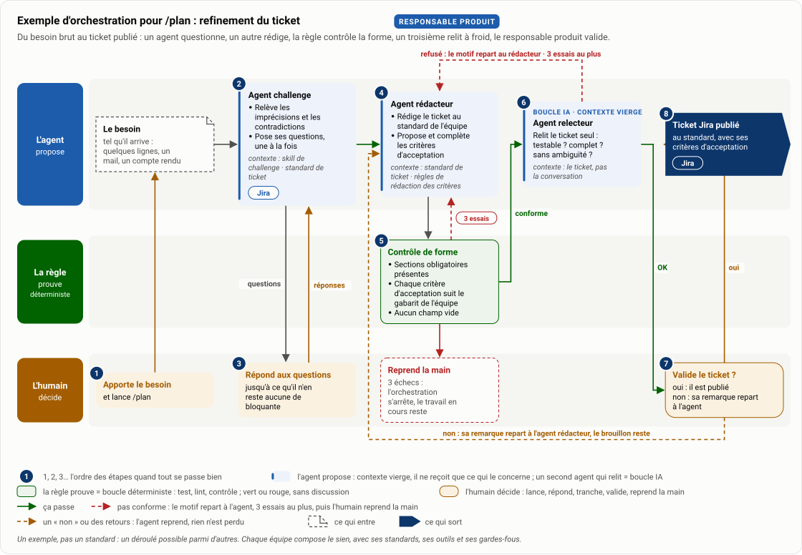
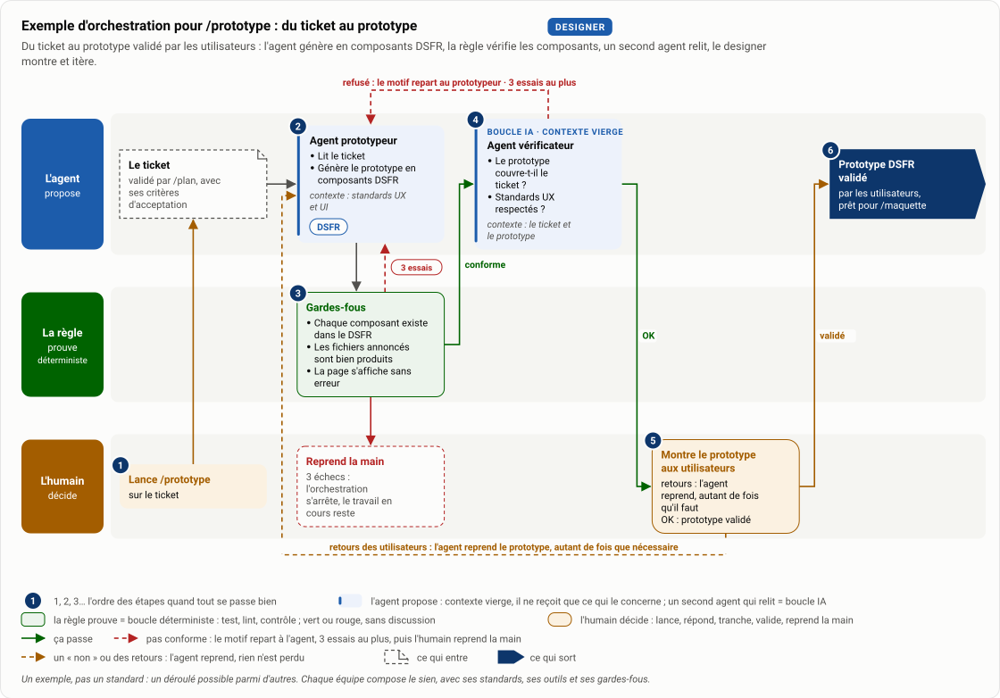
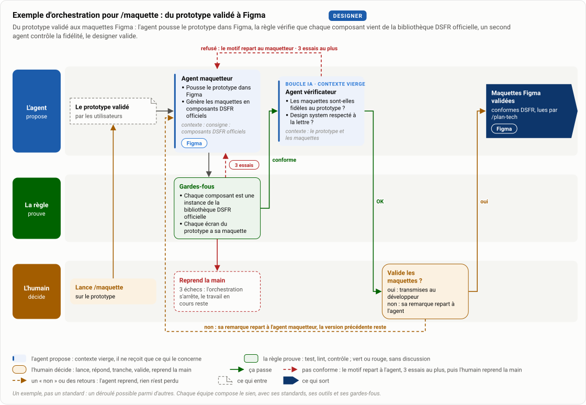
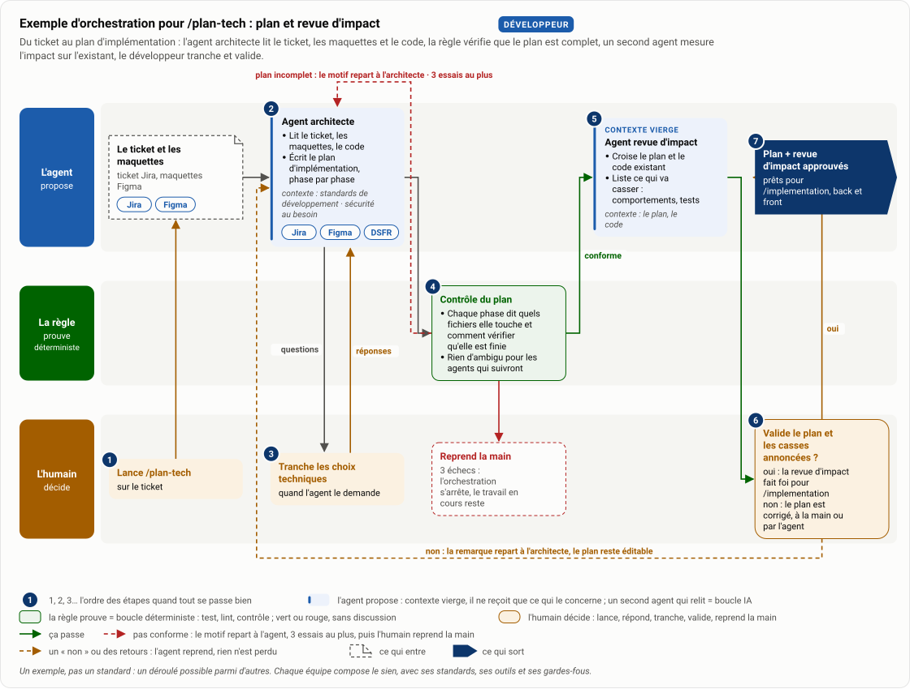
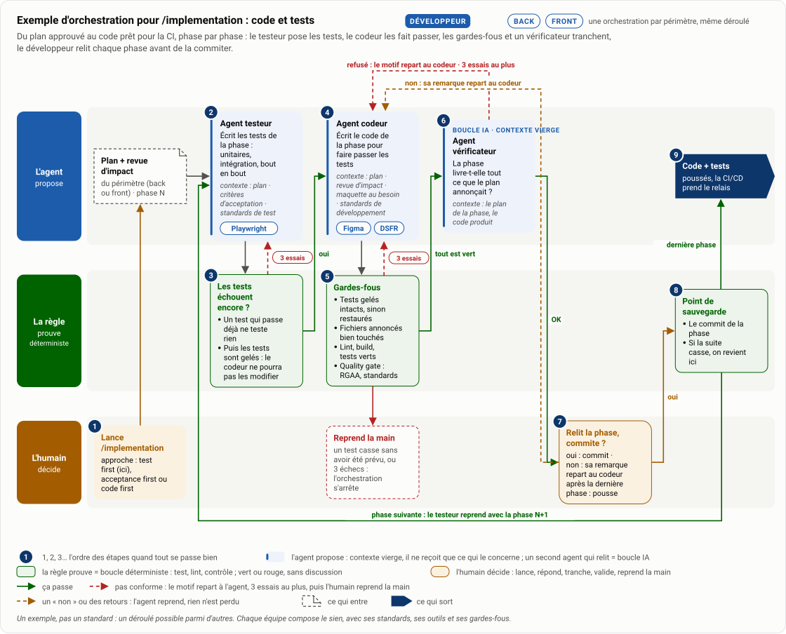

- Challenge la précision du besoin, pose ses questions
- Rédige le ticket au standard de l'équipe
- Propose et complète les critères d'acceptation
Ministères sociaux · Transformation IA
La cible : le cycle produit augmenté par l'IA
Cinq skills, du besoin au code livré. Chacun part des standards de l'équipe (le contexte), parle aux outils par MCP et produit l'artefact qui alimente le suivant.
- /plan
- /prototype
- /maquette
- /plan-tech
- /implementation
- L'agent propose
- La règle prouve
- L'humain décide
Selim Boukhari · La même cible en page
Vue d'ensemble
Cinq skills, trois métiers : chaque skill produit l'artefact qui alimente le suivant
| Responsable produit | Designer | Développeur | |||
|---|---|---|---|---|---|
| /planrefinement du ticket | /prototypedu ticket au prototype | /maquettedu prototype validé à Figma | /plan-techplan et revue d'impact | /implementationcode et tests | |
| L'agentpropose | Challenge le besoin, rédige le ticket au standard de l'équipe, propose les critères d'acceptation | Génère un prototype selon les standards UX et UI, en composants DSFR | Pousse le prototype dans Figma, génère les maquettes en composants DSFR officiels | Lit le ticket et le code, écrit le plan d'implémentation, évalue l'impact prévu sur le code | Phase par phase, codeur et testeur séparés, code et tests ; stop si un test casse sans l'avoir prévu |
| L'humaindécide | Répond, valide le ticket | Le montre aux utilisateurs | Valide les maquettes | Tranche, valide le plan | Relit et commite |
| Sortiel'artefact | Ticket Jira | Prototype validé | Maquettes Figma | Plan + impact prévu | Code + tests |
- Skill : commande (/plan, /prototype…) lancée dans le harness de l'équipe, OpenCode Desktop + Albert ou Claude Code + Bedrock
- MCP : connecteur standard entre l'agent et un outil (Jira, Figma, DSFR, Playwright)
- Le ticket Jira est le fil conducteur : produit par /plan, lu par /prototype, /plan-tech et /implementation
- /plan
- /prototype
- /maquette
- /plan-tech
- /implementation
/plan Du besoin au ticket Jira précis, au standard de l'équipe
L'agentpropose
L'humaindécide
- Répond aux questions de l'agent
- Valide le ticket et ses critères d'acceptation
Contexteles standards
- Skill de challenge des imprécisions
- Standard de ticket de l'équipe
- Règles de rédaction des critères d'acceptation
MCPoutils branchés
Jira
Sortiel'artefact
Ticket Jira précis, au standard, avec ses critères d'acceptation
puis /prototype
- /plan
- /prototype
- /maquette
- /plan-tech
- /implementation
/prototype Du ticket au prototype DSFR, montré aux utilisateurs
L'agentpropose
- Lit le ticket
- Génère un prototype selon les standards UX et UI, en composants DSFR
L'humaindécide
- Montre le prototype aux utilisateurs
- Recueille leurs retours, itère
Contexteles standards
- Standards UX et UI
MCPoutils branchés
DSFR
Sortiel'artefact
Prototype DSFR, montré aux utilisateurs
puis /maquette
- /plan
- /prototype
- /maquette
- /plan-tech
- /implementation
/maquette Du prototype validé aux maquettes Figma, conformes DSFR
L'agentpropose
- Pousse le prototype dans Figma
- Génère les maquettes selon les standards UI, en composants DSFR officiels
- Respect strict du design system
L'humaindécide
- Valide les maquettes
Contexteles standards
- Consigne : récupérer les composants DSFR officiels dans les maquettes
MCPoutils branchés
Figma
Sortiel'artefact
Maquettes Figma du prototype validé, conformes DSFR
puis /plan-tech
- /plan
- /prototype
- /maquette
- /plan-tech
- /implementation
/plan-tech Du ticket au plan d'implémentation, avec sa revue d'impact
L'agentpropose
- Lit le ticket et, au besoin, les maquettes dans Figma
- Lit le code, écrit le plan d'implémentation aux standards de l'équipe
- Évalue l'impact prévu sur le code
L'humaindécide
- Tranche les choix techniques quand l'agent le demande
- Valide le plan
Contexteles standards
- Standards de développement
- Lecture du code
- Standards de sécurité (au besoin)
MCPoutils branchés
JiraFigmaDSFR
Sortiel'artefact
Revue d'impact prévu sur le code + plan d'implémentation
puis /implementation
- /plan
- /prototype
- /maquette
- /plan-tech
- /implementation
/implementation Du plan au code et aux tests, phase par phase
L'agentpropose
- Implémente phase par phase
- Agents codeur et testeur séparés
- Pose le code et les tests : unitaires, intégration, e2e
- S'arrête si un test casse sans l'avoir prévu dans la revue d'impact
- Passe la quality gate avant commit
L'humaindécide
- Choisit l'approche (test first, acceptance first, code first)
- Relit avant de commiter
Contexteles standards
- Revue d'impact prévu sur le code
- Plan d'implémentation
- Maquette au besoin
MCPoutils branchés
JiraFigmaDSFRPlaywright
Sortiel'artefact
Code et tests, prêts pour la CI
- /plan
- /prototype
- /maquette
- /plan-tech
- /implementation
Sous /implementation, trois soutiens à la production vérifient le code
Pendant /implementation
- IDE : ESLint
- Quality gate avant commit : RGAA, standards de qualité, build sans erreur
commit, puis push
À chaque pushen boucle
- CI/CD : revue de code par un bot IA, puis Sonar
- Rejet du bot ou issue Sonar : la correction repart dans /implementation
la nuit
Chaque nuithors boucle
- Pré-audit RGAA poussé, analyse de sécurité
- Chaque écart ouvre un ticket, corrigé dans un prochain /plan
Cible : des soutiens à la production aussi pour le produit (Definition of Ready outillée) et le design (audit DSFR / RGAA), paliers 2 et 3 de la checklist de déploiement
Le bot de revue IA en CI fait partie des mécanismes proposés, à confirmer avec les équipes (palier 4 de la checklist de déploiement).
Exemples d'orchestration
Skill par skill, un exemple d'orchestration
Cinq exemples, un par skill, pour se représenter une orchestration : les agents, le contexte qu'on leur donne, où l'humain intervient, les boucles et les retours. Des illustrations, pas des modèles à copier : chaque équipe compose la sienne.
Un schéma se lit de gauche à droite, dans l'ordre des numéros.
L'agentpropose
Contexte vierge, il ne reçoit que ce qui le concerne ; un second agent qui relit = boucle IA
La règleprouve · déterministe
Boucle déterministe : test, lint, contrôle ; vert ou rouge, sans discussion
L'humaindécide
Lance, répond, tranche, valide, reprend la main
- 1, 2, 3… l'ordre des étapes quand tout se passe bien
- Ce qui entre
- Ça passe
- Ce qui sort
- Pas conforme : le motif repart à l'agent, 3 essais au plus, puis l'humain reprend la main
- Un « non » ou des retours : l'agent reprend, rien n'est perdu
- /plan
- /prototype
- /maquette
- /plan-tech
- /implementation
Exemple /plan Du besoin brut au ticket publié
Un agent questionne, un autre rédige, la règle contrôle la forme, un troisième relit à froid, le responsable produit valide.

Un exemple, pas un standard : un déroulé possible parmi d'autres.Clic sur le schéma ou touche Z : agrandir · Ouvrir le schéma seul
Ce qui entre : Le besoin, tel qu'il arrive : quelques lignes, un mail, un compte rendu.
- l'humain · Apporte le besoin : et lance /plan
- l'agent · Agent challenge : Relève les imprécisions et les contradictions ; Pose ses questions, une à la fois. Contexte : skill de challenge, standard de ticket. MCP : Jira
- l'humain · Répond aux questions : jusqu'à ce qu'il n'en reste aucune de bloquante
- l'agent · Agent rédacteur : Rédige le ticket au standard de l'équipe ; Propose et complète les critères d'acceptation. Contexte : standard de ticket, règles de rédaction des critères
- la règle · Contrôle de forme : Sections obligatoires présentes ; Chaque critère d'acceptation suit le gabarit de l'équipe ; Aucun champ vide
- l'agent · Agent relecteur : Relit le ticket seul : testable ? complet ? sans ambiguïté ?. Contexte : le ticket, pas la conversation
- l'humain · Valide le ticket : oui : il est publié ; non : sa remarque repart à l'agent
- sortie · Ticket Jira publié : au standard, avec ses critères d'acceptation. MCP : Jira
Boucles : refusé : le motif repart au rédacteur · 3 essais au plus ; non : sa remarque repart à l'agent rédacteur, le brouillon reste. Chaque règle renvoie son motif à l'agent, 3 essais au plus, puis l'humain reprend la main.
- /plan
- /prototype
- /maquette
- /plan-tech
- /implementation
Exemple /prototype Du ticket au prototype validé par les utilisateurs
L'agent génère en composants DSFR, la règle vérifie les composants, un second agent relit, le designer montre et itère.

Un exemple, pas un standard : un déroulé possible parmi d'autres.Clic sur le schéma ou touche Z : agrandir · Ouvrir le schéma seul
Ce qui entre : Le ticket, validé par /plan, avec ses critères d'acceptation.
- l'humain · Lance /prototype : sur le ticket
- l'agent · Agent prototypeur : Lit le ticket ; Génère le prototype en composants DSFR. Contexte : standards UX et UI. MCP : DSFR
- la règle · Gardes-fous : Chaque composant existe dans le DSFR ; Les fichiers annoncés sont bien produits ; La page s'affiche sans erreur
- l'agent · Agent vérificateur : Le prototype couvre-t-il le ticket ? ; Standards UX respectés ?. Contexte : le ticket et le prototype
- l'humain · Montre le prototype aux utilisateurs : retours : l'agent reprend, autant de fois qu'il faut ; OK : prototype validé
- sortie · Prototype DSFR validé : par les utilisateurs, prêt pour /maquette
Boucles : refusé : le motif repart au prototypeur · 3 essais au plus ; retours des utilisateurs : l'agent reprend le prototype, autant de fois que nécessaire. Chaque règle renvoie son motif à l'agent, 3 essais au plus, puis l'humain reprend la main.
- /plan
- /prototype
- /maquette
- /plan-tech
- /implementation
Exemple /maquette Du prototype validé aux maquettes Figma
L'agent pousse le prototype dans Figma, la règle vérifie que chaque composant vient de la bibliothèque DSFR officielle, un second agent contrôle la fidélité, le designer valide.

Un exemple, pas un standard : un déroulé possible parmi d'autres.Clic sur le schéma ou touche Z : agrandir · Ouvrir le schéma seul
Ce qui entre : Le prototype validé, par les utilisateurs.
- l'humain · Lance /maquette : sur le prototype
- l'agent · Agent maquetteur : Pousse le prototype dans Figma ; Génère les maquettes en composants DSFR officiels. Contexte : consigne : composants DSFR officiels. MCP : Figma
- la règle · Gardes-fous : Chaque composant vient de la bibliothèque DSFR officielle, rien de redessiné ; Chaque écran du prototype a sa maquette
- l'agent · Agent vérificateur : Les maquettes sont-elles fidèles au prototype ? ; Design system respecté à la lettre ?. Contexte : le prototype et les maquettes
- l'humain · Valide les maquettes : oui : transmises au développeur ; non : sa remarque repart à l'agent
- sortie · Maquettes Figma validées : conformes DSFR, lues par /plan-tech. MCP : Figma
Boucles : refusé : le motif repart au maquetteur · 3 essais au plus ; non : sa remarque repart à l'agent maquetteur, la version précédente reste. Chaque règle renvoie son motif à l'agent, 3 essais au plus, puis l'humain reprend la main.
- /plan
- /prototype
- /maquette
- /plan-tech
- /implementation
Exemple /plan-tech Du ticket au plan d'implémentation
L'agent architecte lit le ticket, les maquettes et le code, la règle vérifie que le plan est complet, un second agent mesure l'impact sur l'existant, le développeur tranche et valide.

Un exemple, pas un standard : un déroulé possible parmi d'autres.Clic sur le schéma ou touche Z : agrandir · Ouvrir le schéma seul
Ce qui entre : Le ticket et les maquettes, ticket Jira, maquettes Figma.
- l'humain · Lance /plan-tech : sur le ticket
- l'agent · Agent architecte : Lit le ticket, les maquettes, le code ; Écrit le plan d'implémentation, phase par phase. Contexte : standards de développement, sécurité au besoin. MCP : Jira, Figma, DSFR
- l'humain · Tranche les choix techniques : quand l'agent le demande
- la règle · Contrôle du plan : Chaque phase dit quels fichiers elle touche et comment vérifier qu'elle est finie ; Rien d'ambigu pour les agents qui suivront
- l'agent · Agent revue d'impact : Croise le plan et le code existant ; Liste ce qui va casser : comportements, tests. Contexte : le plan, le code
- l'humain · Valide le plan et les casses annoncées : oui : la revue d'impact fait foi pour /implementation ; non : le plan est corrigé, à la main ou par l'agent
- sortie · Plan + revue d'impact approuvés : prêts pour /implementation, back et front
Boucles : plan incomplet : le motif repart à l'architecte · 3 essais au plus ; non : la remarque repart à l'architecte, le plan reste éditable. Chaque règle renvoie son motif à l'agent, 3 essais au plus, puis l'humain reprend la main.
- /plan
- /prototype
- /maquette
- /plan-tech
- /implementation
Exemple /implementation Du plan approuvé au code mergé, phase par phase
Le testeur pose les tests, le codeur les fait passer, les gardes-fous et un vérificateur tranchent, le développeur relit chaque phase avant de la commiter. Après le push, la CI/CD boucle avec la phase ; les contrôles de nuit, eux, ouvrent des tickets.

BackFrontune orchestration par périmètre, même déroulé
- 1Lance la phasel'humain
- 2Agent testeurl'agent
- 3Les tests échouent encore ?la règle
- 4Agent codeurl'agent
- 5Gardes-fousla règle
- 6Agent vérificateurl'agent
- 7Relit la phase, commite ?l'humain
- 8Point de sauvegardela règle
- 9Code + tests pousséssortie
- 10Bot de revue IAl'agent
- 11La PR peut-elle passer ?la règle
- 12Valide et mergel'humain
- 13Code mergésortie
- 14Chaque nuit, hors bouclela règle
- 15Les écarts ouvrent des ticketsl'humain
Un exemple, pas un standard : un déroulé possible parmi d'autres.Clic sur le schéma ou touche Z : agrandir · Ouvrir le schéma seul
Ce qui entre : Plan + revue d'impact, du périmètre (back ou front) · phase N.
- l'humain · Lance la phase : /implementation, approche : test first (ici), acceptance first ou code first
- l'agent · Agent testeur : Écrit les tests de la phase : unitaires, intégration, bout en bout. Contexte : plan, critères d'acceptation, standards de test. MCP : Playwright
- la règle · Les tests échouent encore : Un test qui passe déjà ne teste rien ; Puis les tests sont gelés : le codeur ne pourra pas les modifier
- l'agent · Agent codeur : Écrit le code de la phase pour faire passer les tests. Contexte : plan, revue d'impact, maquette au besoin, standards de développement. MCP : Figma, DSFR
- la règle · Gardes-fous : Tests gelés intacts, sinon restaurés ; Fichiers annoncés bien touchés ; Lint, build, tests verts ; Quality gate : RGAA, standards
- l'agent · Agent vérificateur : La phase livre-t-elle tout ce que le plan annonçait ?. Contexte : le plan de la phase, le code produit
- l'humain · Relit la phase, commite : oui : commit · non : sa remarque repart au codeur ; après la dernière phase : pousse
- la règle · Point de sauvegarde : Le commit de la phase ; Si la suite casse, on revient ici
- sortie · Code + tests poussés : la CI/CD prend le relais
- l'agent · Bot de revue IA : Relit la diff : standards, lisibilité, régressions ; Approuve ou demande des changements. Contexte : standards de développement, le plan de la phase
- la règle · La PR peut-elle passer : Revue du bot IA approuvée ; Sonar vert : couverture, duplication, vulnérabilités ; Lint, build et tests rejoués
- l'humain · Valide et merge : arbitre les remarques du bot, puis merge
- sortie · Code mergé : la fonctionnalité part en recette
- la règle · Chaque nuit, hors boucle : Pré-audit RGAA poussé ; Analyse de sécurité : dépendances, code ; Trop long pour tourner à chaque push
- l'humain · Les écarts ouvrent des tickets : corrigés dans un prochain ticket, pas dans la phase en cours
Boucles : refusé : le motif repart au codeur · 3 essais au plus ; non : sa remarque repart au codeur ; phase suivante : le testeur reprend avec la phase N+1 ; revue rejetée ou issue Sonar : la correction rejoint le plan de la phase, le codeur reprend. Chaque règle renvoie son motif à l'agent, 3 essais au plus, puis l'humain reprend la main.
Exemples d'orchestration
Cinq règles valent pour les cinq orchestrations
- 1
Trois essais au plus par agentAu-delà, l'orchestration s'arrête proprement et l'humain reprend la main. Jamais de boucle sans fin, un coût borné.
- 2
Un « non » à une validation ne détruit rienLe brouillon, le plan ou la version précédente restent, la remarque repart à l'agent.
- 3
Chaque étape validée est un point de sauvegardeSi la suite casse, on y revient au lieu de tout refaire.
- 4
Chaque agent démarre avec un contexte vierge et ne reçoit que ce qui le concerneLe relecteur lit le ticket, pas la conversation qui l'a produit.
- 5
La règle avant l'agentQuand un test, un lint ou un contrôle peut trancher (boucle déterministe), c'est lui qui tranche ; un second agent relit ce qu'aucune règle ne sait prouver (boucle IA).
Exemples d'orchestration
Des exemples, pas un standard
/implementation s'inspire de ce qui tournechez Egapro et DACCORD
Codeur et testeur séparés, front et back
Et y ajoute des mécanismes proposésà confirmer avec les équipes
- Tests gelés
- Agent vérificateur
- Point de sauvegarde par phase
- Bot de revue IA en CI (palier 4)
Les quatre autres schémas
Ce qu'une orchestration pourrait être sur ces skills
Chaque équipe compose son orchestration au palier 3 de la checklist de déploiement, qui décline cette cible en quatre paliers.
Checklist de déploiement · La cible en page · Dossier des schémas